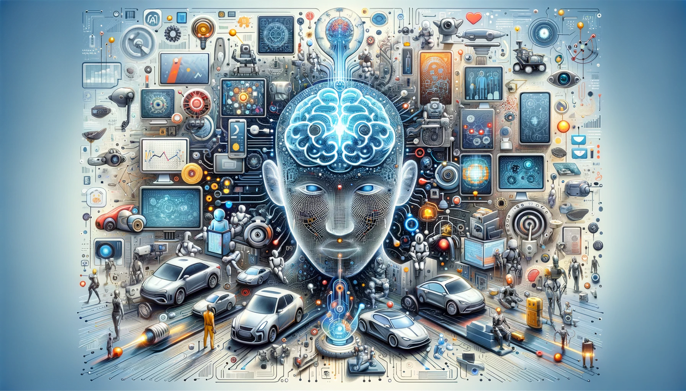

<
Nombre: anderson adrian
Apellido: duque garcia
Fecha: 08/07/2025
Curso: PROGRAMACION
Document Bienvenidos al Mundo de la Inteligencia Artificial
bienvenid@ la inteligencia Artificial
La inteligencia artificial es un campo de la ciencia relacionado con la creación de computadoras y máquinas que pueden razonar, aprender y actuar de una manera que normalmente requeriría inteligencia humana o que involucra datos cuya escala excede lo que los humanos pueden analizar.
La IA es un campo amplio que incluye muchas disciplinas, como la informática, el análisis y la estadística de datos, la ingeniería de hardware y software, la lingüística, la neurociencia y hasta la filosofía y la psicología.
A nivel operativo para el uso empresarial, la IA es un conjunto de tecnologías que se basan principalmente en el aprendizaje automático y el aprendizaje profundo, que se usan para el análisis de datos, la generación de predicciones y previsiones, la categorización de objetos, el procesamiento de lenguaje natural, las recomendaciones, la recuperación inteligente de datos y mucho más.
>

TIPOS DE INTELIGENCIA ARTIFICIAL
Maquinas reactivas
Memoria limitada
Teoria de la mente
inteligencia maquinas reactivas
IA limitada que solo reacciona a diferentes tipos de estímulos basados en reglas preprogramadas. No usa memoria y, por lo tanto, no puede aprender con datos nuevos. Deep Blue de IBM, que venció al campeón de ajedrez Garry Kaspárov en 1997, fue un ejemplo de una máquina reactiva.
inteligencia memoria limitada
Se considera que la mayor parte de la IA moderna es de memoria limitada. Puede usar la memoria para mejorar con el tiempo mediante el entrenamiento con datos nuevos, por lo general, a través de una red neuronal artificial o algún otro modelo de entrenamiento. El aprendizaje profundo, un subconjunto del aprendizaje automático, se considera inteligencia artificial con memoria limitada.
inteligencia teoria de la mente
: En la actualidad no existe IA con teoría de la mente, pero se están investigando distintas posibilidades. El término hace referencia a la IA que puede emular la mente humana y tiene capacidades de toma de decisiones similares a las de un ser humano, lo cual incluye reconocer y recordar emociones, y reaccionar en situaciones sociales como lo haría un ser humano.